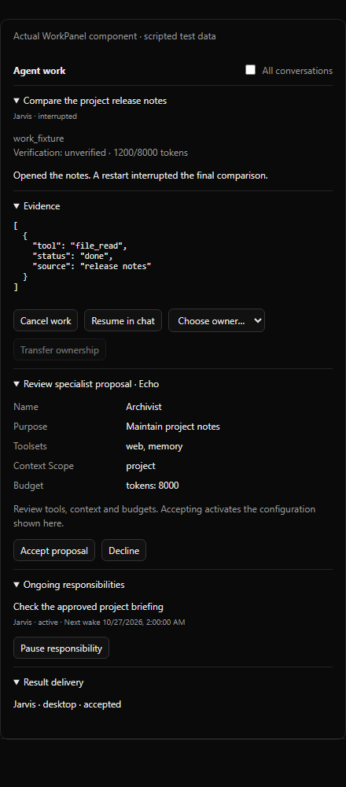

Agent: identity and expertise
Role, instructions, approved capabilities and demonstrated experience.
Implemented source · 11.10.7 preparation · 26 October 2026 · Native Chat + Lean
Agents keep their identity.
Work keeps its owner and progress.
This report describes implemented native application paths and deterministic fixture evidence. Live models, the installed Windows app and real channel delivery still need owner acceptance. The historical research remains expandable below.
PersonaStore keeps Echo, Jarvis, GLaDOS and approved specialists. A model selection or a new chat does not create another agent identity.
StateStore owns work, attempts, action intent, approvals, proposals, responsibilities, scoped notes and delivery in one atomic versioned document.
Delegated help is a child assignment. Original grants intersect, budgets apply and circular delegation is refused. Formal transfer is an owner action.
One completed occurrence does not end the continuing responsibility. Pause/resume and next wake remain visible.
Private agent notes, project/session memory, session-scoped helper transcript search and per-agent lessons. Workers receive a concise brief and read-only tools. Outside content and other agents’ claims remain untrusted evidence.
One local inference slot; four aggregate slots. Interactive priority ages so background work can advance. Token, time and child budgets apply to work. Summaries and learning share admission.
Application reservations and budgets are cooperative controls. They do not isolate arbitrary OS processes, preempt an in-flight provider request or guarantee that a small model completes a task.
Existing Chat, desktop feed, Discord owner DM and Telegram owner routes are connected. WhatsApp and mobile integrations are not claimed.
Inspect work and evidence, transfer ownership, recover approvals, review proposed agents, pause responsibilities and reconcile delivery. The rest of the interface stays familiar.

Chat and Code retain the centered 680px conversation structure from the layout fix.
279 backend regressions; 47 focused follow-up tests; 192 web tests, typecheck and production build. Actual Lean/API/scheduler paths, persistence and restart, child grants, activation failure, approvals/questions, resource conflicts, process leases, delivery receipts and replay refusal. Existing native, learning, privacy, skills, state and web regressions are checked.
Live local/cloud models, installed application behavior, real channel delivery and the Windows installer. Source is prepared as 11.10.7; no release or EXE was published by this work.
Build a fresh installer before testing. A PR push or merge does not publish an EXE. The technical record and manual guide provide the acceptance checklist and build sequence.
Research & design · 26 October 2026 · Native Chat + Lean harness · Baseline 39ec47f
Keep Echo as your primary assistant.
Give continuing work a clear owner and a reliable lifecycle.
Connect existing identities, memory, tools, evidence and routines through explicit work records. Keep the interface and modular runtime.
Role, instructions, approved capabilities and demonstrated experience.
Assignment, state, dependencies, evidence and next action.
Context, model/tool loop, enforcement, observation and stopping.
Persona CRUD, rooms, memory, per-agent lessons, reviewed skills, MCP trust, evidence, routine timing and privacy/approval enforcement.
Work ownership, grant inheritance, durable waits, recovery, identity-preserving delivery and shared background budgets.
Concrete finding: reminders save an agent ID, but their chat posting helper currently attributes the message to Echo. Other gaps and source anchors are in the technical report.
Carry objective, constraints, evidence, allowed tools/data destinations, budget, cancellation and return route. A chat promise does not establish completion.
For 4B: short briefs, selected tools, foreground preference and a bounded background queue. Count heartbeat, summaries and reflection too. Several personas on one model do not add independent knowledge.
Effective authority = owner policy ∩ authenticated principal ∩ approved agent capabilities ∩ work grant ∩ current privacy/resource limits.
Tool filtering, privacy, taint, guest restrictions, skill/MCP review, credential redaction, cancellation and audit evidence.
Carry constraints across delegation and waits. Recheck exact-action approvals and changed grants. Evaluate stronger process/credential isolation separately.
Python-level checks and persona toolsets do not establish a host security boundary for every command or external program. A generated skill cannot grant permissions.
Its technical account separates agent execution from permission and credential services. Adapt that separation of authority; Echo's application checks do not establish its VM isolation. Meta technical account
Persistent identities, explicit routines and asynchronous handoffs are useful patterns. Shared resources still need ownership. Overview · Collaboration
Specialists as tools retain manager ownership; handoffs transfer a conversational branch. Distinguish help from ongoing responsibility transfer. Orchestration guidance
Skills and deferred tools can replace unnecessary routers/planners. Separate workers remain useful for context, parallelism or permissions. Keep named roles without adding inference hops to every request. Current guidance
Echo offers a draft role, sources, capabilities and budget. The owner accepts before activation. Investment research permissions do not grant trading authority.
The existing direct conversation uses Jarvis's identity with relevant context and lessons. Echo need not relay every exchange.
Echo retains the objective. A specialist or worker gets a bounded brief, returns evidence and stops. Acceptance is checked before completion.
The existing scheduler produces one occurrence. Source checks precede inference. The agent reports under the selected change/quiet rule and records the next wake.
Restart reconciliation inspects actual effects. Uncertain sends remain unknown until reconciled; old approvals do not authorize changed arguments.
Resolve the user and permitted destination. Deliver the same result event without another model reproducing it.
Outcome records inform a draft skill or lesson. Review, versions and rollback remain explicit. Protected policy and verifiers stay outside adaptation.
| Order | Reuse existing code | Acceptance before expansion |
|---|---|---|
| P0 · Contracts / grants | Work/attempt IDs, owner, authority context, helper/transfer distinction | No authority growth via delegation; simple Chat stays simple |
| P1 · Recovery / delivery | Routine occurrence bridge, durable waits, effect reconciliation, delivery records | Crash/duplicate tests, exact approvals, truthful transport outcomes |
| P1 · Context / identity | Consistent memory/search scope and channel principals | Relevant cross-chat access and correct agent attribution |
| P2 · Responsibilities | Reviewed proposals, existing skills/lessons and activity details | Declined proposals stay inactive; owner, next wake and pause visible |
| P2 · Measured scaling | Shared admission, budgets and bounded workers | Accepted outcomes, latency and resource use measured separately for 4B/cloud |
| Later · Hosting / channels | Optional remote host, isolation and actual new inbound adapters | Explicit hosting/security design; no implied laptop-off execution |
Keep the current UI. Use existing activity/details and approval surfaces where needed. Original Codex, Claude and ACP harnesses retain their own execution and account boundaries.